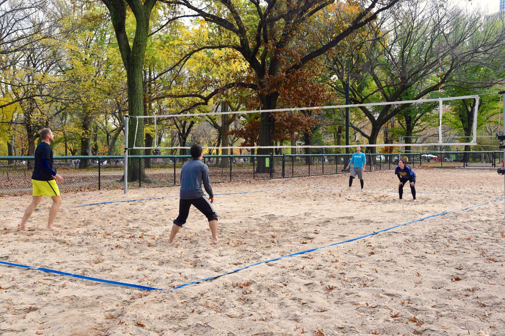
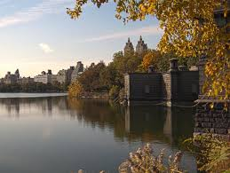

Where I spend most of my summers. Great competition if you play, entertaining to watch if you don't.
A beautiful body of water. Great for a run or a walk, great views of skyline.
The North Woods are located in uptown Central Park. Home to some of the densest woods in Manhattan, winding paths, and a brand new swimming pool/skating rink, the North Woods are a great place to visit no matter the season.